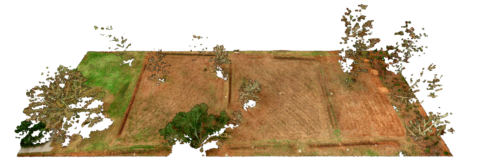

Point Cloud Aesthetics
Brendan Harmon & Nicholas Serrano
Point Cloud Aesthetics
Rosedown Plantation
Point Cloud Semiotics

Points Clouds
Point Clouds are algorithmically mediated, indexical encodings of space and color at a moment in time
Indexicality
Indices are physically and causally connected to what they represent

Index of an Index
Rosedown Plantation, Slave Staircase
Perceptual Index
Perceptual Indices are traces of objects

Hilltop Arboretum, January 24, 2020
Conceptual Index
Conceptual Indices are traces of ideas

Hilltop Arboretum, net annual biomass
Symbolism
Symbols are given meaning by convention

Perceptual Symbolism
Rosedown Plantation, Wallpaper
Symbolic Structure
Encoded as a symbolic data structure
| X | Y | Z | R | G | B |
|---|---|---|---|---|---|
| -1.38539982 | -2.95930004 | -8.80980003 | 53 | 41 | 45 |
| -1.08609962 | -2.85930014 | -8.68869996 | 74 | 45 | 40 |
| -1.30480003 | -2.65850019 | -8.70860004 | 16 | 8 | 7 |
| -0.80039978 | -2.58699989 | -8.75689995 | 161 | 133 | 126 |
| -0.82590008 | -2.53049994 | -8.19280005 | 151 | 137 | 136 |
| -0.35680008 | -2.37580013 | -8.59280002 | 18 | 17 | 18 |
| -0.35239983 | -2.40630007 | -8.21350002 | 123 | 62 | 48 |
| -0.69639969 | -2.26340008 | -8.67620003 | 26 | 24 | 22 |
| -0.70779991 | -2.26650000 | -8.07910001 | 49 | 57 | 69 |
| -0.20359993 | -2.04750013 | -8.65110004 | 42 | 41 | 49 |
| 0.29399967 | -1.95119953 | -8.60870004 | 53 | 65 | 91 |
| 0.37310028 | -1.43799973 | -8.64540005 | 122 | 89 | 76 |
Iconicity
Icons look like what they represent